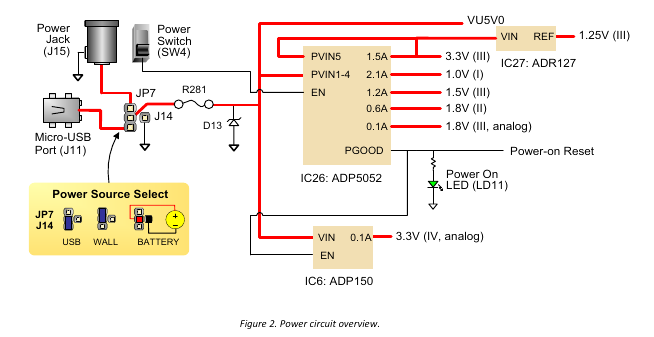
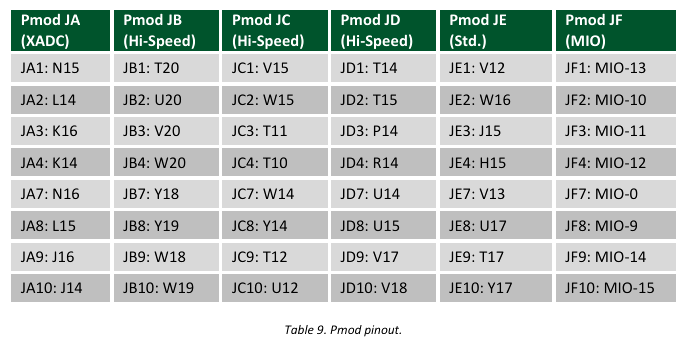

為了學習 RISC-V 以及體驗看看 Xilinx 的開發平台，最近我入手了 Zybo Board ，這是一塊具有 FPGA 同時又包含了 ARM Cortex-A9 雙核心的開發板。
在我們開始這一切之前，我們需要稍微了解一下這片開發板以及他的週邊等資訊。
要了解 Zybo Board 的週邊，首先要看的就是開發商 DIGILENT 所提供的 ZYBO FPGA Board Reference Manual。 讓我們來看看一些比較重要的地方吧!
基本硬體認識
電源輸入(5V)
Zybo Board 允許三種不同類型的電源輸入模式，分別是 USB、外接電源(J15)、外接電池。我們可以從 Reference Manual 得到電源模組的大致資訊。

控制電源輸入的位置在 JP7 的排針座上，我們可以透過切換跳線(Jumper)來選擇我們需要的電源輸入，在週邊使用不多的情況下，我會直接使用 USB (5V) 來作為電流的輸入。
要注意到的是，Zybo Board 僅吃 5V 電源，因此不論你是用外接電源(J15)或是外接電池，你最好都先確認你的電壓是否為 5V (或是低於) ，否則你的開發板可能因此燒壞。
插上電源後，透過電源開關 (Power Switch, SW4) 的切換即可完成給電/斷電的動作。
Zynq SOC
Zybo Board 核心是 Xilinx Zynq-7000 系列的 Z-7010 ARM/FPGA SoC 處理器，這是一種混和了 FPGA 以及 ARM Cortex-A9 處理器的 FPGA 核心。以往的 FPGA 開發板需要用到 CPU 的時候只能夠燒錄用 HDL 語言撰寫的軟核心到開發板上，這種混搭 FPGA/ARM 的開發板則是讓你可以針對通用需求使用 ARM CPU 進行程式的開發，特殊需求則透過 FPGA 進行處理/加速來運作，是一種蠻有趣的架構。
我們可以把 Zynq SoC 分為兩個區塊, 處理系統 (Processing System, PS) 以及 可程式邏輯區塊(Programmable Logic, PL)，像這樣
處理系統(Processing Syste, PS) 也就是有 ARM Cortex-A9 處理器的部份，可程式邏輯區塊(Programmable Logic, PL) 則是 FPGA 所包含的部份。
在上面的區塊圖中，我們要另外注意到 MIO (Multiplexed I/O) 以及 EMIO (Extended multiplexed I/O) ，在 Zynq 7000 系列 SoC 中，我們共有 54 個 MIO 可用，而這些 MIO 所連接的位址是無法在 可程式邏輯區塊 (Programmable Logic, PL) 中看到。
在 Zybo Board 我們有這幾個地方是連接到 MIO (Multiplexed I/O) 上的
系統啟動流程
由於 Zynq 7000 系列內建了 ARM CPU，也因此和傳統的 FPGA 開發板相比，系統啟動流程也會不同，整體開機流程可以分為三個階段:
階段 0
當 Zybo board 電源啟動後，CPU0 會執行內部已經預燒錄的程式 BootROM，這個程式會根據
JP5所設定的資訊來更新狀態暫存器(mode register)，接著 BootROM 會透過狀態暫存器(mode register)的資訊從 MicroSD、NOR Flash、JTAG 等位置抓取 Zynq Boot Image，並將包在 Zynq Boot Image 裡面的第一級啟動開機程式 (First Stage Bootloader, FSBL)複製到內部 256KB 的記憶體 (On-Chip Memory, OCM) 去，最後執行 FSBL，進入下一個階段。如果 BootROM 是因為按下了 RESET 按鈕等狀況而被執行，Zybo board 會選用之前已經存放在狀態暫存器(mode register)的開機狀態，而不是當下的
JP5狀態。階段 1
在這階段中, 第一級啟動開機程式 (First Stage Bootloader, FSBL) 初始化了 DDR 記憶體、GPIO 等週邊設定，接下來會載入存放在 Boot Image 內的位元流 (bitstream)，用他來對可程式邏輯區塊 (Programmable Logic, PL) 進行設定。
當可程式邏輯區塊(Programmable Logic, PL)設定完成後，FSBL 會去載入程式(ex: u-boot)並執行它。
階段 2
最後的接段即是執行 FSBL 所載入的程式，這些程式可以從簡單的 "Hello World"，到像 u-boot 這樣的第二階段開機程式，用來載入 Linux 或是其他的作業系統。
更改開機模式
我們可以透過切換 JP5 的跳線(Jumper)來決定我們要透過哪種方式去載入第一級啟動開機程式 (First Stage Bootloader, FSBL)

MicroSD 啟動
當使用者將 MicroSD 插入到 J4 的 SD 卡槽，並設定好 JP5 的跳線的話，我們可以透過 MicroSD 來進行開機的動作。
若你希望透過 MicroSD 進行開機，你需要先設定好你的 SD 卡:
- 透過電腦格式化 MicroSD 卡成
FAT32檔案格式 - 複製從 Xilinx SDK 製作出來的 Zynq Boot Image 到 MicroSD 卡上
- 將 Zynq Boot Image 命名為
BOOT.bin - 將 MicroSD 卡從電腦移除，並插入到 Zybo Board 的 J4 SD 卡槽上
- 接上電源，並設定好 JP7 (Power Source Select)
- 將
JP5的跳線 (Jumper) 調整到 MicroSD 模式 (板上標示為 SD 的那個) - 啟動電源。接下來 Zybo Board 就會從 MicroSD 卡啟動。
QSPI 啟動
在 Zybo board 上有一顆 128-Mbit Quad-SPI (QSPI) 的 NOR Flash，我們可以透過 Xilinx ISE 和 Vivado 等工具去將 Zynq Boot Image 下載到 QSPI Flash 上。
當下載完成後，照這樣的步驟即可透過 QSPI 啟動:
- 接上電源，並設定好 JP7 (Power Source Select)
- 將
JP5的跳線 (Jumper) 調整到 QSPI 模式 (板上標示為 QSPI 的那個) - 啟動電源。接下來 Zybo Board 就會從 QSPI 卡啟動。
JTAG 啟動
當你將 JP5 設定為 JTAG 啟動模式，Zynq 內的 Cortex-A9 處理器會等到電腦端的 Xilinx 工具載入了要執行的程式之後，再執行預執行的程式，或是啟用一步一步(step-by-step)的執行模式來方便我們除錯。
除此之外，我們也可以透過 iMPACT 或是 Vivado Hardware Server 透過 JTAG 來設定可程式邏輯區塊 (Programmable Logic, PL)。
Zybo Board 預設是開機啟動 Cascaded JTAG 模式，在這種模式下 處理器系統 (Processing System, PS) 和 可程式邏輯區塊 (Programmable Logic, PL) 可以透過同一個 JTAG 去進行控制。如果你將 JP6 短路，則可以讓 JTAG 僅看得到 可程式邏輯區塊 (Programmable Logic, PL)，在這種狀況下，使用者可以透過 EMIO (Extended multiplexed I/O) 將 JTAG 拉出，讓外部的設備可以和 處理器系統 (Processing System, PS) 進行溝通。
SPI Flash
Zybo Board 內建了 4-bit SPI (QSPI) NOR Flash，硬件型號為 Spansion S25FL128S。
假設 JP5 設定為 NOR Flash 開機，則我們可以透過這顆 NOR Flash 來初始化處理器系統(Processing System, PS)以及可程式邏輯區塊(Programmable Logic, PL)。除此之外，當開機完成後，我們可以使用 Spansion
檔案系統(Spansion Flash File System, FFS) 來對檔案進行讀寫的處理。

從電路圖我們可以看到 SPI Flash 是直接連到 Zynq 處理器上的 Quad-I/O SPI interface。
DDR 記憶體
Zybo Board 使用的是 Micron MT41J128M16JT-125 或是 MT41K128M16JT-125 這兩種 DDR3 記憶體元件，在 Zybo Board 上我們共有 512MB 的記憶體空間可以使用。
根據 Zynq-7000 All Programmable SoC Technical Reference Manual，DDR3 記憶體是直接連接到處理器系統 (Processing System, PS)。
USB UART 接口
Zybo Board 並未將 UART 序列埠拉出，取而代之的它採用了 FTDI FT2232HQ 這款 USB 轉 UART 的 IC 讓你的電腦可以和 Zybo Board 進行溝通。
如果你是 Linux 使用者，在安裝完 Vivado 後，你會需要手動安裝 udev 設定好讓 Linux 可以偵測到這個 USB 轉 UART 設備(共兩組，/dev/ttyUSB0, /dev/ttyUSB1)，假設你的 vivado 安裝在 /opt/Xilinx/Vivado/2016.1 的話，我們可以透過以下程式來安裝 udev 設定。
/opt/Xilinx/Vivado/2016.1/data/xicom/cable_drivers/lin64/install_script/install_drivers/install_digilent.sh
MicroSD 插槽
在 Zybo Board 的背面，我們可以看到 Micro SD 插槽(J4)，根據 Zynq-7000 All Programmable SoC Technical Reference Manual ，Zynq 的 SDIO 控制器僅支援 1-bit 或是 4-bit 傳輸模式 (Host Modes)，不支援 SPI 模式。
而 Micro SD 使用到的 MIO (Multiplexed I/O) 資訊如下:
USB OTG
Zybo Board 提供了一組 USB OTG 支援，在這個界面中使用了 Microchip 的 USB3320 這顆 IC 來作為端口物理層 (Port Physical Layer, PHY)，要注意到的是，你不可以 同時 將 USB 主機 (HOST) 以及 USB 設備 (Device) 接到 USB OTG 端口上。
(也就是不要同時接上設備到 J9 以及 J10)
而在 USB OTG 的功能上，我們則是用掉了 MIO 28 ~ 39 的位置。
另外，由於 USB 2.0 的規格是 USB 主機最多可以提供 500mA 的電流，當你設定為 USB 主機的模式時，在 J11 的電源端 必須 改用外接電源或是電池輸入，避免電流不夠的情況發生。
Ethernet PHY
Zybo Board 使用 Realtek RTL8211E-VL PHY 來實現 10/100/1000 網路傳輸的功能。具體使用到的 MIO 以及 EMIO 接腳資訊如下:
我們可以透過在 RJ45 附近的 LED 來觀察流量 (LD7) 以及連線狀態 (LD6) 的資訊
網卡的 MAC 位址則是存放在 Micrichip 24AA02E48 這顆 EEPROM 上面，Zynq 處理器透過 EMIO 上的 I²C 接口來和 EEPROM 進行溝通。
HDMI Source/Sink
Zybo Board 的 HDMI 接口並未透過外部 IC 去驅動，因此我們必須透過可程式邏輯(Programmable Logic, PL) 去實現影片編碼 (Encoding)與解碼(Decoding)的功能。
由於 Zybo Board 的 HDMI 接口支援 HDMI 來源裝置(HDMI Source) 以及 HDMI 目標裝置 (HDMI Sink) 的功能，我們也須注意訊號的方向變化。
根據 ZYBO FPGA Board Reference Manual 可知 Zyboard Board 的 HDMI 至少支援到 720p (1280x720) 的解析度。
VGA
Zybo Board 的 VGA 輸出也是沒有透過外部 IC 將數位訊號轉換為類比訊號，取而代之的，它採用了 R–2R resistor ladder 這種分壓的方式將數位訊號變成了 VGA 用的類比訊號。
時脈源 (Clock Sources)
ZYBO board 提供了 50MHZ 的時脈到 Zynq 處理器的 PS_CLK 接腳，基本連接資訊如下:
要注意到的一點是，由於 Ethernet PHY 會接收 50HMZ 時脈輸入，並輸出 125HMZ 到 Zynq 處理器上，當 Ethernet PHY 重置(reset)的時候，CLK125 的輸出會被取消。
基本輸入/輸出 (I/O)
Zybo board 板上有一些預先定義好的 IO, 比如指撥開關 (Switch)、LED 燈、無段按鈕等。
聲音 (Audio)

Pmod 接腳
在 Zybo Board 的周遭，共有 6 個 2x6 母排座，用來將多餘的 GPIO 拉出。每個 Pmod 提供了兩個 3.3 VCC 電源、兩個 GND 訊號以及 8 個 IO 可以用。 在 Pmod 上的 VCC 以及 GND 最多可以提供到 1A 的電流(但要記得外接電源)。
不同的 Pmod 用途則可能不同，詳情請參見下表:
